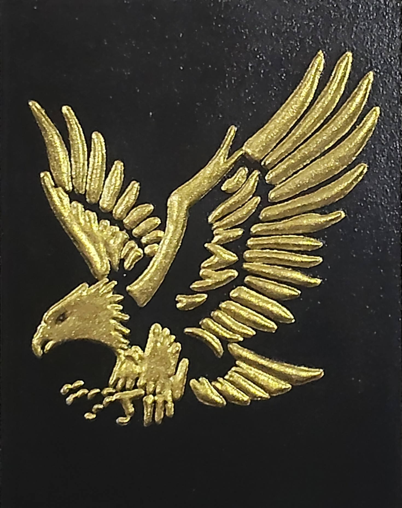

NICOLETA FILIP ART
ÁGUILA
Representación ornamental de un águila en vuelo, ejecutada en relieve dorado sobre fondo negro, con las alas extendidas y un elaborado tratamiento lineal de las plumas.
Sobre la obra
ÁGUILA presenta una composición de carácter simbólico y ornamental protagonizada por un águila representada en pleno vuelo, con las alas completamente extendidas y el cuerpo orientado en diagonal.
La figura está ejecutada en relieve dorado sobre fondo negro, destacando especialmente la cabeza, el pico y las garras.
Presentación artística
Las alas presentan un elaborado tratamiento lineal que individualiza las plumas y genera una marcada sensación de movimiento.
El contraste entre el acabado dorado de la figura y el fondo oscuro refuerza el carácter escultórico y expresivo de la pieza.
Ficha técnica
- Año
- 2026
- Dimensiones
- 30 × 40 cm
- Soporte
- Madera
- Técnica
- Técnica estándar.
- Categoría
- Fauna
Si deseas recibir información sobre esta obra, puedes solicitarla directamente.
SOLICITAR INFORMACIÓN →